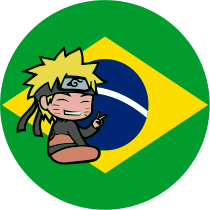
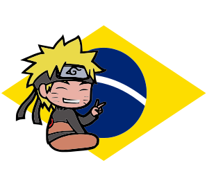

Início
Temporada 17
Temporada 18
Temporada 19
Temporada 20

Bem vindo ao AnimaWeb

362 - A Determinação de Kakashi
363-O Jutsu das forças Aliadas Shinobi!
364 - Os laços que formam vínculos
365 - Aqueles que dançam nas sombras
366 - Aqueles que tudo sabem
367 - Hashirama e Madara
368 - A Era dos Estados em Guerra
369 - Meu verdadeiro sonho
370 - A Resposta de Sasuke
371 - Buraco
372 - Algo que Preenche o buraco
373 - Equipe 7 reunir!
374 - O Novo Trio do impasse mortal
375 - Kakashi vs Obito
376 - Edição extras: Instruções Para Capturar a nove caudas
377 - Edição extras: Naruto contra Naruto Robô
378 - O Jinchuriki do dez caudas
379- Uma Abertura
380- O Dia em Que Naruto Nasceu
381 - A Árvore Divina
382 - O Sonho de um Shinobi
383 - Perseguindo a Esperança
384 - Um coração cheio de companheiro
385 - Obito Uchiha
386 - Estou sempre te observando
387 - A promessa que foi mantida
388 - Meu Primeiro Amigo
389 - A adorada irmã mais velha
390 - A Decisão de Hanabi
391 - A ascensão de Madara Uchiha
392 - O coração Escondido
393 - Um Verdadeiro Fim
394 - A Nova prova chunin
395 - Começa a prova chunin
396 - As Três Questões
397 - Alguém digno de Ser Líder
398 - A noite antes da segunda prova
399 - Sobrevivência no Deserto Infernal
400 - Como um Usuário de Taijutsu...
401 - O Final
402 - Fuga E Perseguição
403 - Coragem Sem limites
404 - Os Problemas de Tenten
405 - A Dupla encarcerada
406 - O Meu Lugar
407 - O ninjutsu secreto do clã Yamanaka
408 - A Marionete Amaldiçoada
409 - Sua retaguarda
410 - O Início do plano secreto
411 - A almejada Besta com caudas
412 - A decisão de Neji!
413 - Esperanças para o futuro
414 - A Beira da Morte
415 - Os Dois Mangekyo
416 - A Formação Da Equipe Minato
417 - Você será o meu apoio
418 - A Besta azul contra Os Seis Caminhos de Madara
419 - A Juventude do Papai
420 - A Formação dos oitos portais internos
421 - O Sábio dos Seis Caminhos
422 - Aqueles Que Herdaram
423 - O Rival de Naruto
424 - Elevação
425 - O Sonho Infinito
426 - O Tsukuyomi Infinito
427 - O Mundo dos Sonhos
428 - O Lugar de Tenten
429 - Killer Bee Rappuden: parte1
430 - Killer Bee Rappuden: parte2
431 - Para ver Aquele Sorriso, Só mais uma vez
432 - Os pergaminhos ninja de Jiraya: O conto do herói Naruto: O Ninja Perdedor
433 - Os pergaminhos ninja de Jiraya: O conto do herói Naruto:A Missão de Busca
434 - Os pergaminhos ninja de Jiraya: O conto do herói Naruto: Equipe Jiraiya
435 - Os pergaminhos ninja de Jiraya: O conto do herói Naruto: Prioridades
436 - Os pergaminhos ninja de Jiraya:O conto do herói Naruto: O Homem Mascarado
437 - Os pergaminhos ninja de Jiraya: O conto do herói Naruto:O Poder Selado
438 - Os pergaminhos ninja de Jiraya:O conto do herói Naruto:Regras ou Companheiros?
439 - Os pergaminhos ninja de Jiraya:O conto do herói Naruto: A Criança da Profecia
440 - Os pergaminhos ninja de Jiraya:O conto do herói Naruto:O Pássaro Engaiolado
441 - Os pergaminhos ninja de Jiraya:O conto do herói Naruto: Voltando para casa
442 - Os pergaminhos ninja de Jiraya:O conto do herói Naruto:O Caminho Mútuo
443 - Os pergaminhos ninja de Jiraya:O conto do herói Naruto: A Diferença de Poder
444 - Os pergaminhos ninja de Jiraya:O conto do herói Naruto:Saindo da aldeia
445 - Os pergaminhos ninja de Jiraya:O conto do herói Naruto: Perseguidores
446 - Os pergaminhos ninja de Jiraya:O conto do herói Naruto: Conflito
447 - Os pergaminhos ninja de Jiraya:O conto do herói Naruto: Outra Lua
448 - Os pergaminhos ninja de Jiraya:O conto do herói Naruto: Companheiro
449 - Os pergaminhos ninja de Jiraya:O conto do herói Naruto:Os ninjas se unem
450 - Os pergaminhos ninja de Jiraya: O conto do herói Naruto: Rivais
451 - A história de Itachi Luz e trevas: Nascimento e morte
452 - A história de Itachi Luz e trevas:O Gênio
453 - A história de Itachi Luz e trevas: A dor de Viver
454 - A história de Itachi - Luz e trevas: O Pedido de Shisui
455 - A história de Itachi Luz e trevas: Noite de Luar
456 - A história de Itachi -Luz e trevas: A Escuridão da Akatsuki
457 - A história de Itachi Luz e trevas: Parceiro
458 - A história de Itachi Luz e trevas: Verdade
459 - A Deusa dos primórdios
460 - Kaguya Otsutsuki
461 - Hagoromo e Hamura
462 - Um Passado Fabricado
463 - O Ninja Mais Imprevisível do Mundo!
464 - Ninshu: O credo ninja
465 - Ashura e Indra
466-A Tumultuosa Jornada
467 - A Decisão de Ashura
468 - O Sucessor
469 - Uma Missão Especial
470 - Conectando pensamentos
471 - Aquele dois...Sempre
472 - É Melhor Você...
473 - O Sharingan revivido
474 - Parabéns
475 - O Vale do Fim
476 - A Batalha Final
477 - Naruto e Sasuke
478 - O Símbolo da União
479 - Naruto!! Uzumaki
480 - Naruto e Hinata
481 - Sasuke e Sakura
482 - Gaara e Shikamaru
483 - Jiraiya e Kakashi
484 - A História do Sasuke: Nascer do Sol, parte1: Os Humanos Explosivos
485 - A História do Sasuke: Nascer do Sol, parte2: Coliseu
486 - A História do Sasuke: Nascer do Sol, parte3: Fuushin
487 - A História do Sasuke: Nascer do Sol, parte4:0 Ketsuyugan
488 - A História do Sasuke: Nascer do Sol, parte5: A Última Pessoa
489 - A História do Shikamaru uma nuvem vagando pela Escuridão Silenciosa, partel: O Estado das coisas
490 - A História do Shikamaru uma nuvem vagando pela Escuridão Silenciosa, parte2:Nuvens Negras
491 - A História do Shikamaru uma nuvem vagando pela Escuridão Silenciosa, parte3: Imprudência
492 - A História do Shikamaru uma nuvem vagando pela Escuridão Silenciosa, parte4:Nuvem de Suspeitas
493 - A História do Shikamaru uma nuvem vagando pela Escuridão Silenciosa, parte5: Alvorecer
494 - História da História da Aldeia da Folha:O Dia perfeito para o Casamento, partel: O Casamento do Naruto
495 - História da Aldeia da Folha:O Dia perfeito para o Casamento, parte2:0 Presente de Casamento todo Poderoso
496 - História da Aldeia da Folha:O Dia perfeito para o Casamento, parte3: Vapor e Pilulas de Comida
497 - História da Aldeia da Folha:O Dia perfeito para o Casamento, parte4: O Presente do Kazekage
498 - História da Aldeia da Folha:O Dia perfeito para o Casamento, parte5: Última Missão
499 - História da Aldeia da Folha:O Dia perfeito para o Casamento, parte6:O Resultado da Missão Secreta
500 - História da Aldeia da Folha:O Dia perfeito para o Casamento, parte7: A Mensagem